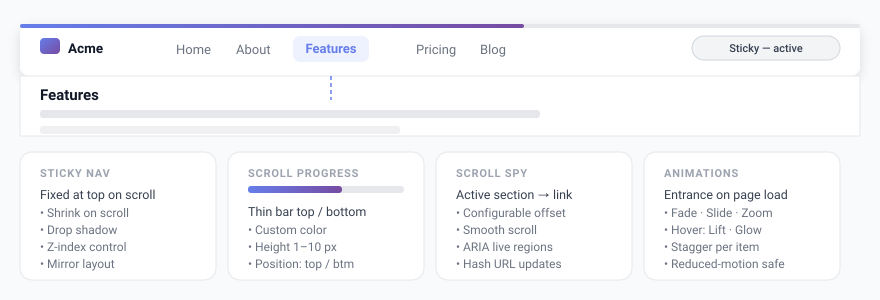

Layout & Effects
Fine-tune how the navigation bar is arranged, make it stick to the top as visitors scroll, and add tasteful animations — all from the Layout section of Menu Builder.

Spacing and alignment
In the Layout section you can control how the menu items are arranged:
- Alignment — where the items sit in the bar: start, center, end, space-between, or space-evenly.
- Gap — the spacing between menu items.
- Horizontal / vertical padding — the inner padding of the nav bar.
- Container border radius — round the corners of the whole bar.
- Push last item — pin the final menu item to the opposite edge (handy for a “Contact” or “Login” call-to-action).
Sticky navigation
Enable Sticky to keep the navigation bar fixed at the top of the screen as the visitor scrolls down the page.
| Option | Description |
|---|---|
| Shrink on scroll | The bar becomes more compact once the page is scrolled. |
| Shadow | Adds a drop shadow under the bar when it is stuck. |
| Mirror layout | Use a different alignment for the stuck state than the default state. |
| Transition | How smoothly the bar animates between states (in seconds). |
| Z-index | Stacking order, in case the bar needs to sit above other fixed elements. |
Scroll progress bar
A thin bar that fills up as the visitor scrolls through the page — a popular touch on long articles and documentation.
- Enable Scroll progress bar in the Layout section.
- Choose its color, height (1–10 px), and position (top or bottom of the nav bar).
Entrance animation
Animate the menu when the page first loads. Pick from Fade in, Slide down/up/left/right, Zoom in, or Flip X — or leave it on None.
You can also tune the duration, a delay before it starts, and a stagger so items appear one after another.
Link hover animation
Add a micro-interaction when the visitor hovers over a menu link. Options include Lift, Scale, Pulse, Bounce, Shake, Glow, and Animated underline.
Dropdown indicator
Items with a submenu can show a small indicator. Choose the shape — triangle, chevron, dot, or none — and optionally set its color, size, and whether it rotates when the dropdown opens.
The submenu dropdown panel itself is fully styleable in Style → Submenu Dropdown: border radius, horizontal and vertical padding, font size, font weight, and min-width. The hover color is computed adaptively from the submenu background, so it stays visible on both light and dark themes.
Scroll Spy
Scroll Spy automatically highlights the nav link corresponding to the section currently visible in the viewport as the visitor scrolls down a long page — a common pattern on documentation, landing pages, and one-page sites.
- Enable Scroll Spy in Layout → Layout.
- Set a trigger offset (default 80 px) — the sticky bar height is added to this automatically at runtime.
- Optionally enable Smooth scroll with History API hash updates and ARIA live region announcements for screen readers.
The last section on the page always activates when scrolled to the very bottom. Active-section links share the visual treatment defined in Colors → Active Link.
Scroll Spy
Scroll Spy automatically highlights the nav link corresponding to the section currently visible in the viewport as the visitor scrolls down a long page — a common pattern on documentation, landing pages, and one-page sites.
- Enable Scroll Spy in Layout → Layout.
- Set a trigger offset (default 80 px) — the sticky bar height is added to this automatically at runtime.
- Optionally enable Smooth scroll with History API hash updates and ARIA live region announcements for screen readers.
The last section on the page always activates when scrolled to the very bottom. Active-section links share the visual treatment defined in Colors → Active Link.
All animations respect the visitor’s prefers-reduced-motion setting — see the Accessibility page.